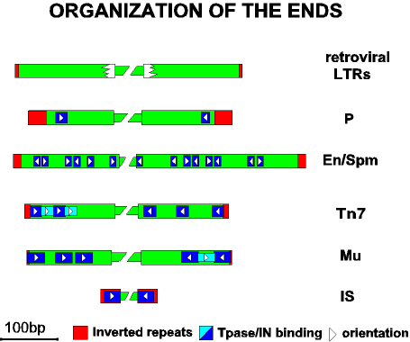

 |
The figure shows a sample of different types of transposon ends with different combinations of Tpase binding sites. No te that no sequence specific sites have yet been identified for the retroviruses. The Drosophila P element and the bacterial ISs exhibit the simplest Tpase binding sites while other elements of both eukaryote (En/Spm) and prokaryote (Tn7 and bacteriophage Mu) origin show a higher complexity.
|